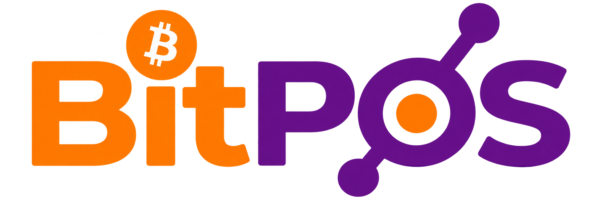

BITPOS / DEVICE MOTION LAB
The counter comes alive.
Orange and purple motion studies for the 480 × 320 touchscreen.
Interactive browser prototype. Physical firmware integration is managed separately.
Interactive browser prototype. Physical firmware integration is managed separately.

CAFE COUNTER480 × 320 logical pixels · Sample bill only · Sound plays only after a button press
Clock
Large digits, a calm breathing colon and a cafe animation. Time comes from the browser in this preview. Firmware must show an unsynced state until its clock is valid.
Payment
A ring resolves into a check. Twelve particles burst once, paired with a short level-up cue. After the celebration, the amount and receipt stay readable.
Device budget
128 × 128 GIFs at 12 fps. One decoder at a time. Native effects keep the core status visible if SD is missing. Payment render ACK must precede optional playback.
Downloaded motion, ready for evaluation.
Animated Noto Emoji by Google, CC BY 4.0. Attribution and technical changes · Asset hashes and memory notes · Implementation handoff